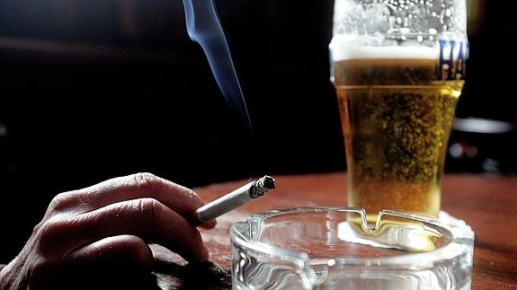

La relación entre consumo de tabaco y alcohol está poco estudiada y poco tenida en cuenta por los profesionales. Tanto el alcohol como la nicotina son drogas psicoactivas que se potencian mutuamente, y comparten la tendencia a “ no ser vistas” por los profesionales sanitarios, es decir, la poca disposición a ver el problema y a intervenir.
El consumo de tabaco y alcohol se hace en mucha ocasiones en un contexto social y pueden relacionarse ambos consumos. De hecho se ha estudiado bastante la relación entre consumo de tabaco y alcohol en jóvenes, que van unidos, y en los que intervienen factores psicosociales. Este enlace que se establece entre alcohol y tabaco en las situaciones sociales habituales en las que se inicia el consumo de ambas sustancias es muy potente, tanto que puede estar presente toda la vida, y solo se puede llegar a romper a través de una concienciación y de un esfuerzo por romperla. Un estudio reciente nos dice que el consumo de alcohol acelera la rapidez con que el cuerpo descompone la nicotina. Este hecho podría ser un factor contribuyente de las bajas tasas de abandono del tabaquismo en los fumadores adictos al alcohol. A las personas que descomponen la nicotina de forma más lenta se les hace más fácil dejar de fumar, porque la nicotina permanece más tiempo en sus cuerpos. Al beber alcohol se descompone más rápidamente la nicotina en el organismo y el cerebro pide más ingesta de nicotina, fumando más.Beber un botella de 750 ml de vino a la semana aumenta el riesgo de desarrollar cáncer a lo largo de la vida, en la misma medida en que lo hace fumar 10 cigarrillos por semana para las mujeres o cinco en el caso de los hombres, según un nuevo estudio.
La investigación, llevada a cabo por la Universidad de Southampton y la de Bangor, en Reino Unido, considera que esta es una buena comparación para explicar los riesgos para la salud de beber con moderación.
Sin embargo, expertos advirtieron que fumar conlleva un riesgo de cáncer mucho mayor que el alcohol, para la mayoría de los bebedores. Los autores del estudio estiman que en los hombres que no fuman, el riesgo absoluto de desarrollar cáncer en su vida asociado al consumo de una botella de vino a la semana es de 1%.
En las mujeres que cumplen las mismas condiciones el riesgo es del 1,4%. En las mujeres, el consumo de alcohol está asociado al aumento del riesgo de cáncer de mama y, en los hombres, al cáncer de hígado y del tracto gastrointestinal. La investigación solo examinó el cáncer (no incluyó ninguna otra enfermedad asociada a los fumadores como el las enfermedades cardiovasculares o de pulmón).
También utilizó información de 2004 y no tomó en consideración otros factores que pueden causar cáncer como la edad, los genes, la dieta y otros aspectos del estilo de vida.